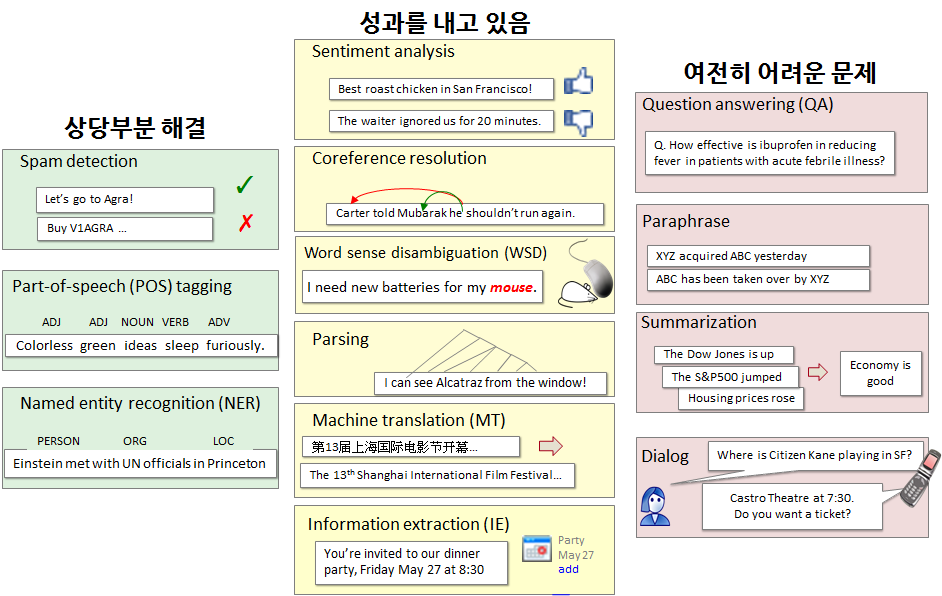
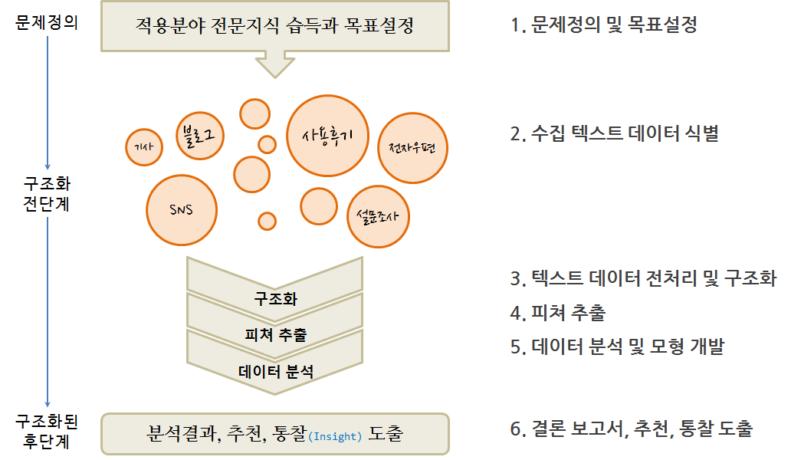

xwMOOC 기계학습
텍스트 데이터
학습목표
- 텍스트 데이터 분석에 대해 이해한다.
- 전통적인 텍스트 분석방법에 대응되는 단어 주머니(bag of words)에 대해 살펴본다.
1. 언어기술 로드맵
스탠포드 Dan Jurfsky 교수가 정의한 언어기술(Language Technology)에 따라 거의 해결된 기술과 상당한 진전을 이루는 기술, 그리고 여전히 어려운 문제로 구분했다.
- 상당부분 해결 문제
- Spam Detection
- Part-of-speech (POS) tagging
- Named entity recognition (NER)
- 성과를 내고 있는 문제
- Sentiment analysis
- Coreference resolution
- Word sense disambiguation (WSD)
- Parsing
- Machine translation (MT)
- Information extraction (IE)
- 여전히 어려운 문제
- Question answering (QA)
- Paraphrase
- Summarization
- Dialog

2. 단어주머니 접근법
단어 주머니(bag of words) 모형은 전통적인 자연어 처리(Natural Language Processing) 혹은 정보 검색(Information Retrieval)에서 사용되는 간략화한 표현으로 볼 수 있다. 문법 무시, 어순 무시 등 전통적인 텍스트 분석에 사용되는 것과 달리, 각 단어가 출현된 회수를 Feature로 추출하여 문서 분류, 감정분석 등에 활용한다.

3. 텍스트 데이터 분석 작업 흐름
텍스트 문자 데이터 분석 작업 흐름도 일반적인 데이터 분석 과정과 크게 차이가 나지는 않는다.
- 문제 정의 및 목표설정: 적용분야 전문지식 습득 필요
- 수집 텍스트 데이터 식별: 목표달성을 위한 정보가 담긴 데이터 발굴
- 데이터 분석 및 모형 개발 과정
- 텍스트 데이터 전처리 및 구조화
- 데이터 정제 및 Feature 공학을 통한 Feature 추출
- 데이터 분석 및 모형 개발 : 탐색적 데이터 분석 포함
- 분석결과 정리: 보고서, 추천, 통찰 도출

3.1. 텍스트 데이터 전처리 1
- 토큰화(Tokenization)
- 정제(Cleaning): 소문자, 공백(Whitespace) 제거, 구두점 소거 등
- 어간 추출(Stemming), Lemmatization, Collocation
- 필터(Filtering): 불용어 제거
| 만화가 김충원 | 개발하는 데이터 분석가 박은정 |
|---|---|
| 사람의 생김새 를 결정짓는 것은 골격과 피부의 미묘한 변화에서 비롯되는 차이 점이고, 그 차이점을 없애 버린다면 모든 사람의 생김새는 똑같을 것입니다. | 데이터를 결정짓는 것은 행과 열의 미묘한 변화에서 비롯되는 차이 점이고, 그 차이점을 없애 버린다면 모든 데이터는 똑같을 것입니다. |
3.2. 문서단어행렬(DTM), 단어문서행렬(TDM)
단어문서행렬(Term Document Matrix)을 전치(Transpose)하게 되면 문서단어행렬(DTM)이 된다. 단어문서행렬은 다음과 같은 형태를 갖는다.
| \(문서_1\) | \(문서_1\) | \(문서_1\) | \(\cdots\) | \(문서_n\) | |
|---|---|---|---|---|---|
| \(단어_1\) | 0 | 0 | 0 | 0 | 0 |
| \(단어_2\) | 1 | 1 | 0 | 0 | 0 |
| \(단어_3\) | 1 | 0 | 0 | 0 | 0 |
| \(\cdots\) | 0 | 0 | 2 | 1 | 1 |
| \(단어_m\) | 0 | 0 | 0 | 1 | 0 |
문서단어행렬은 단서문서행렬을 전치하여 다음과 같은 형태를 갖는다.
| \(단어_1\) | \(단어_1\) | \(단어_1\) | \(\cdots\) | \(단어_n\) | |
|---|---|---|---|---|---|
| \(문서_1\) | 0 | 1 | 1 | 0 | 0 |
| \(문서_2\) | 0 | 1 | 0 | 0 | 0 |
| \(문서_3\) | 0 | 0 | 0 | 2 | 0 |
| \(\cdots\) | 0 | 0 | 0 | 1 | 1 |
| \(문서_m\) | 0 | 0 | 0 | 1 | 0 |
qdap 팩키지 wfm() 함수를 사용해서 말뭉치(Corpus) 대신 텍스트에서 바로 단어 빈도수를 산출하는 것도 가능하다.
| \(문서_1\) | |
|---|---|
| \(단어_1\) | 0 |
| \(단어_2\) | 1 |
| \(단어_3\) | 1 |
| \(\cdots\) | 0 |
| \(단어_m\) | 0 |